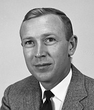

Please note: the AAS Obituaries are temporarily being hosted on this website while their full content is being ingested into the PubPub publishing platform newly adopted by the Bulletin of the American Astronomical Society. When the migration is complete, your existing links will take you to the final, migrated content. Contact peter.williams@aas.org with any questions.
David S. Heeschen (1926-2012)

David Heeschen, former Director of the National Radio Astronomy Observatory (NRAO) and the father of the Very Large Array, died peacefully at his home in Charlottesville, Virgina, on April 13, 2012. He was 86.
David Sutphin Heeschen was born in Davenport, Iowa, on March 12, 1926, received his bachelor and Master of Science degrees from University of Illinois in 1949 and 1951 respectively. His Doctor of Philosophy in Astronomy which he received from Harvard University in 1955 was one of the first in the United States for work in radio astronomy. He was married to Eloise St. Clair, and they had three children, Lisa, David, and Richard.
After teaching for a year at Wesleyan University, Heeschen returned to Harvard in 1955 as a Lecturer and Research Associate. He was associated with the Harvard Observatory Radio Astronomy Project from its beginning in 1953 until 1956, helping to set up Harvard's 24-foot and 60-foot radio telescopes.
Dave Heeschen became involved with Associated Universities, Inc. (AUI) during the early planning process for a national radio astronomy facility. He was an enthusiastic supporter of the national observatories concept and became the third NRAO employee, beginning work 1 July 1956, five months prior to the signing of the AUI contract with the National Science Foundation to build and operate the NRAO. He served as Chair of the NRAO Astronomy Department, as Acting Director from 1961-1962, and as Director from 1962-1978. He retired from NRAO in December 1991, but continued to pursue his research interests and to support various NRAO projects and programs.
Under Heeschen’s leadership, NRAO grew from an idea to what became the major center for radio astronomy in the world. He guided the completion of the 140 foot radio telescope and the construction of the 300-foot telescopes, the 4-antenna interferometer in Green Bank, and the 36-foot millimeter telescope on Kitt Peak. He drove the design of the Very Large Array (VLA) in New Mexico, and secured its funding after years of planning and debate within the radio astronomy community and the NSF. By the time he stepped down as Director, the VLA construction was nearly finished, successful observations were being made using the completed portion of the array, and planning for the Very Long Baseline Array (VLBA) had begun.
Perhaps the most important legacy of Heeschen's tenure as NRAO Director was a set of concepts that continue to guide the NRAO to this day. As an observatory dedicated to supporting scientists pursuing research using radio techniques, he felt strongly that the NRAO should design, build, and operate only radio telescopes capable of making observations at the cutting edge of astronomy. He made the NRAO radio telescopes available to any scientist based only on scientific merit of the proposed research, independent of the institutional or national affiliation of the scientist. This "open skies" policy was unusual at the time it was adopted at NRAO, but it has become a world-wide template for astronomical observatories, especially radio observatories. He later described his philosophy for being a good director: Hire good people; leave them alone; don’t take yourself too seriously; and have fun!
As Director, Heeschen built a strong scientific staff to guide the development of new facilities and instrumentation and to provide liaison with the national and international user community, and to advise visitors on the optimum use of equipment with which they might not be familiar. Recognizing that the amount of observing time is limited, and access to the telescopes is highly competitive, he emphasized that the instrumentation and equipment be made as reliable as possible, and that the NRAO staff be available to maintain equipment as necessary. Since the final product of any telescope, is the publication of scientific results, he made funds available to pay for page charges, and to defray a portion of the travel costs for visiting observers.
Dave Heeschen's role in the design and development of the VLA was especially crucial to the successful construction of this radio telescope, one which arguably has been the most important radio telescope in the world since its completion in 1980. Heeschen understood that radio astronomy would develop as an important component of astrophysics only if it could provide high angular resolution images, and that to do so would require exploiting the Fourier-synthesis techniques developed in England and Australia as well as at Caltech. He set the goal of obtaining a radio map at a wavelength of 10 cm with an angular resolution of one arc second, comparable to the then best optical images, in one day's observation. He then led the effort to design and optimize the instrument, and to gain approval for the project, first through a series of review committees, and then by the NSF, culminating with the approval by the Congress in 1972. During the design effort and the early stages of construction, it was Heeschen who approved the critical design decisions such as the waveguide for signal transmission, the cooled front ends, and the digital delay and correlator system. That the VLA has recently been rejuvenated as the powerful Karl G. Jansky Very Large Array is testimony to the far-sighted concept that he developed in the 1960's.
Heeschen's Ph.D. dissertation at Harvard was one of the first radio-astronomy studies of galactic hydrogen. He made the first observation of HI emission from clusters of galaxies in 1954, and in 1956 he and Frank Drake made the first study of HI in a star cluster. While at NRAO, he studied radio source spectra and variability which provided the basis for the early calibration of flux density scales at centimeter and decimeter wavelength. His later study of the radio emission from elliptical galaxies led to his discovery of the compact radio sources in the nuclei in NGC 1052 and NGC 4278 which are now recognized as the low luminosity end of the broad class of active galactic nuclei (AGN) which includes the more powerful quasars.
Following his tenure as NRAO Director, Dave was able to devote more time to continue his research on extragalactic radio sources, and he discovered the intra-day variability of compact radio sources which he called "flicker." This phenomenon is now recognized as the result of scintillation due to turbulence in the interstellar medium (equivalent to the twinkling of stars), and not to intrinsic variability, so is now extensively used to study the ISM.
Outside astronomy, Dave was an avid sailor, and a sports-car enthusiast. In a film on radio astronomy produced in 1967 by the American Astronomical Society, he is shown in Green Bank driving Morton Roberts, who later succeeded him as NRAO Director, to a telescope in a green (officially British Racing Green) Jaguar. Dave and Eloise both held amateur radio licenses. Initially they obtained their licenses in order to keep contact during Dave’s sailing trips, but Dave (AB4IE) later took pride in developing his high speed Morse code skills to contact other amateur stations in more than a hundred countries around the world.
Heeschen was a member of the American Astronomical Society, where he served as President from 1980-1982, a member of the International Astronomical Union, where he served as a Vice President and member of the Executive Committee from 1976-1981, the American Philosophical Society, the American Academy of Arts and Sciences, the National Academy of Sciences, and the U.S. Radio Astronomy Commission of the International Scientific Radio Union. He served on numerous advisory committees to international, federal, and private organizations and on the astronomy Decadal Review committees for the 1970s, 1980s, and 1990s. He received the 1980 NSF Distinguished Public Service award, in 1985 an Alexander von Humboldt Distinguished Senior Scientist Award, and he was NRAO's 1993 Jansky Lecturer.
Obituary written by: David E. Hogg (NRAO)
Additional links:
- http://www.legacy.com/obituaries/dailyprogress/obituary.aspx?n=david-sutphin-heeschen&pid=157138876#fbLoggedOut
- http://www.nrao.edu/archives/Heeschen/heeschen.shtml
BAAS Citation: BAAS, 2012, 44, 010